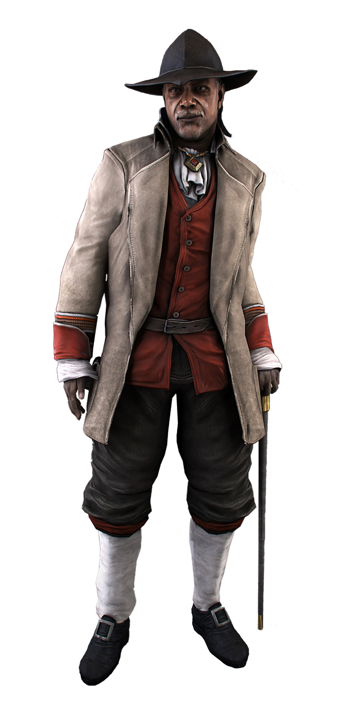

Ratonhnhaké:ton was born to the Templar Haytham Kenway and Zio, a tribal woman of the Mohican people
from the village of Kanatahséton. In 1760, while he was still a young child, he was assaulted by
Charles Lee and other members of the Templar Order seeking the First Civilization temple which the
Mohican people were protecting, and lost his mother shortly after during the burning of
his village by George Washington's forces. Ratonhnhaké:ton himself however, believed

the Templars to be responsible for the attack. Growing up concerned by the outside world's
impact on his people, Ratonhnhaké:ton joined the Assassin Order to prevent the Templars
from returning. Finding the Templars had all but destroyed the Colonial Assassins,
Ratonhnhaké:ton convinced Achilles Davenport to train him. Adopting the more
Western-sounding pseudonym of 'Connor', he revitalized the Order by recruiting
craftsmen to renovate the Davenport Homestead and the Assassin ship, the Aquila.
Robert Faulkner subsequently trained him to captain the ship, while Ratonhnhaké:ton inducted
six more Assassins into the Order.
During his hunt for the Templars, Ratonhnhaké:ton aided
the Patriot movement and protected George Washington, unwittingly becoming an important figure of the American Revolution. However, he was conflicted by wanting to reconcile with his father, despite Achilles' warnings as to the futility of uniting the Assassin and Templar philosophies, which ultimately had tragic consequences as Haytham refused to stop protecting Lee.
Upon learning that it was Washington, not Lee, who had burned his village, Ratonhnhaké:ton became disillusioned with the Revolutionaries, but continued using them to aid in the eradication of the Templars. He reluctantly accepted Washington's request for help investigating Benedict Arnold and then in disposing of an Apple of Eden he had recovered. The latter incident saw Ratonhnhaké:ton trapped in an alternate reality constructed by the Apple, one wherein Washington ruled as king through tyranny. Eventually, Ratonhnhaké:ton escaped this reality and disposed of the Apple.